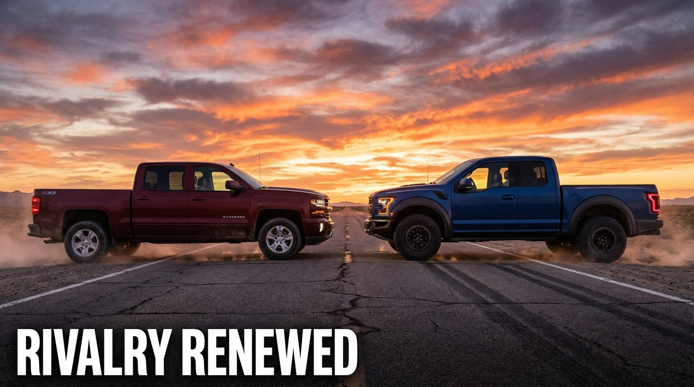

The Chevy Silverado Is the Deadliest Vehicle in America. The F-150 Is Catching Up.

I ran the numbers. Then I ran them again. They didn't get better. The Chevrolet Silverado has killed 9,591 people in FARS-recorded fatal crashes from 2014 to 2023. That is more than any other single vehicle nameplate in the entire database. More than the F-150. More than the Accord. More than the Camry. Nine thousand, five hundred and ninety-one.
The Ford F-150 sits at 9,194 deaths—397 fewer. But here's where the math gets interesting. Ford has a bigger fleet: 6.56 million F-150s on the road versus the Silverado's 5.69 million. So per mile driven, the Silverado is meaningfully deadlier.
| Full-Size Pickup | Deaths | Fleet | Rate per 100M VMT | Impairment |
|---|---|---|---|---|
| Chevy Silverado | 9,591 | 5,687,500 | 1.25 | 20.6% |
| Ford F-150 | 9,194 | 6,562,500 | 1.04 | 18.9% |
| GMC Sierra | 3,337 | 2,450,000 | 1.01 | 21.0% |
| Toyota Tundra | 1,223 | 962,500 | 0.94 | 19.6% |
| Dodge Ram | 4,407 | 4,200,000 | 0.78 | 19.1% |
The Silverado kills at 1.25 deaths per 100 million vehicle miles traveled. The F-150: 1.04. That's a 20% gap on a per-mile basis, meaning for every mile you drive, the Silverado is measurably more likely to kill you. The Dodge Ram—the same size, the same segment, the same basic proposition of “large American truck for large American purposes”—does it at 0.78. That's 37% safer per mile than the Silverado.
The GM Platform Problem
Now add the GMC Sierra—the Silverado's badge twin with a fancier grille and the word “Professional Grade” on the tailgate. The Sierra has killed 3,337 people at a rate of 1.01. Same T1 platform. Same Silao, Mexico and Fort Wayne, Indiana assembly plants. Same engines, same frame, same fundamental relationship between mass and mortality.
The combined GM full-size truck platform toll: 12,928 fatalities. For comparison, the entire Toyota passenger car lineup—Camry, Corolla, Prius, 86, everything—has killed fewer people combined. One GM platform architecture has a higher body count than an entire competitor's car division.
The Model Year Timeline
Model year 2004 is the Silverado's peak carnage year at 663 deaths. The 2007 follows at 604. The 2003 at 597. These were the GMT800 generation—built like bank vaults for the occupants, built like battering rams for everyone else. The 2006–2007 generation change barely made a dent. It took the K2XX generation (2014+) to start bending the curve: model year 2014 drops to 275, 2015 to 246, and the T1 generation finally gets it under 100 by 2019 (74 deaths).
Ford tells a similar story but bends it faster. The F-150's worst model year is 2001 at 672 deaths. By 2013, the aluminum-bodied thirteenth generation was already down to 328. By 2019: 122. By 2022: just 21. Ford's transition to aluminum in 2015 didn't just save weight—it marked a genuine inflection point in occupant protection. GM's corresponding redesign didn't arrive until 2019.
The Impairment Gap
The Silverado's impairment rate is 20.6%—meaning one in five drivers in Silverado fatal crashes tested positive for alcohol or drugs. The F-150 runs 18.9%. That 1.7-point gap doesn't sound like much, but across 23,675 Silverado driver records it represents roughly 400 additional impaired fatalities that the F-150's fleet doesn't produce at the same rate.
The Sierra? 21.0%—the highest of all full-size pickups. The Ram and Tundra both sit below 20%. There's something about GM's truck buyer demographic, or GM's truck marketing, or the specific used-car market these trucks age through, that consistently produces higher impairment involvement than the competition.
The Scale of It
To put 9,591 in perspective: that's roughly 960 deaths per year, or 2.6 per day, every day, for a decade. A fully loaded Boeing 737 crashes every 6 weeks. The Silverado alone produces more annual fatalities than the combined output of every motorcycle model sold by Harley-Davidson, Honda, Yamaha, and Kawasaki in the FARS data.
And yet—nobody writes that headline. Nobody pickets GM dealerships. Nobody proposes Silverado-specific legislation. The truck is too culturally embedded, too economically important, too wrapped up in identity to be treated like the statistical hazard it is. GM sells half a million Silverados every year. They will continue to sell half a million Silverados every year. The numbers will keep not getting better.
I'll keep running them.